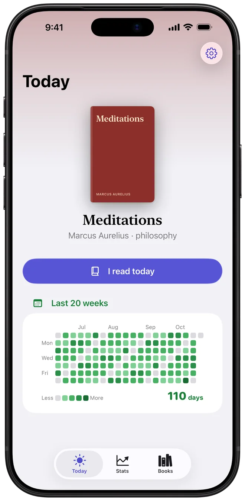
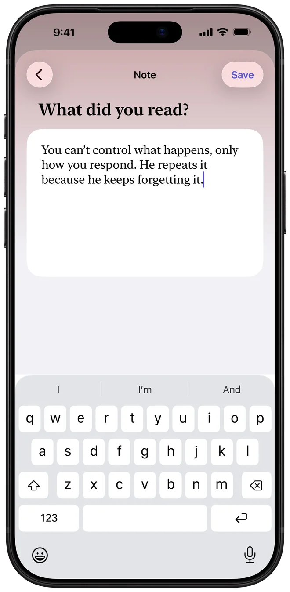
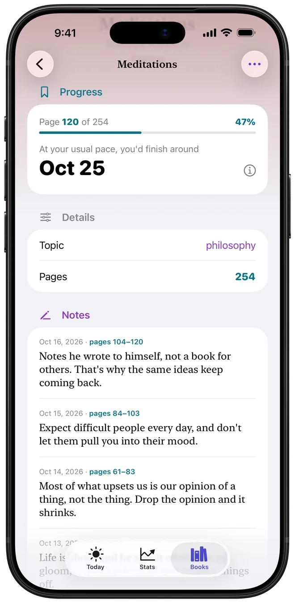
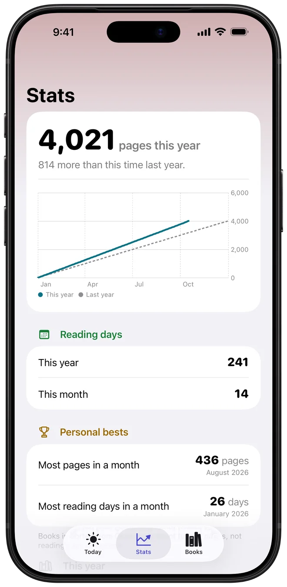
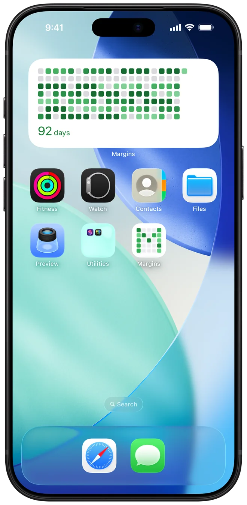

Margins
Pages, notes and reading stats
Log the page you’re on and a short note about what you read. See your reading days, pages this year and best months. Books sync through iCloud.
Free. No ads, no in-app purchases.

Log a page and a note
Tap “I read today”, enter the page you’re on, then write a few lines in one text box. You’re done in about a minute.

Your reading days
A grid of the last 20 weeks. Each day you read fills in a square. Days with more pages are darker. Days without reading stay grey.
Notes for every book
After you log a page, Margins asks “What did you read?” Your answer is saved as a note on the book, together with the date and the pages.
Notes he wrote to himself, not a book for others. That’s why the same ideas keep coming back.
Expect difficult people every day, and don’t let them pull you into their mood.

Pages this year and last year
See the pages you read this year on a chart, next to the same point last year, plus reading days this year and this month, best months, books finished and topics.

All your books in one place
Your books are grouped as Reading, Want to Read, Finished and Set aside. Give a book a topic to link books on the same subject.
Home Screen widget
Add the reading grid to your Home Screen to see your reading days without opening the app.

Also in Margins
Adding books
Search by title, author or ISBN, scan the barcode, or read the title from the cover with the camera.
Import from Goodreads
Pick the CSV export and choose which books to add. The file is read on your iPhone.
Siri and Shortcuts
A Log reading action for Siri and the Shortcuts app.
Privacy
No account, no analytics, no ads, no tracking. Books and notes stay on your device and sync through your own iCloud. The App Store label is “Data Not Collected”.
Languages
English, Polish, German, Spanish, French and Japanese.
Support
Questions, problems or ideas: email drogowolnobylejak@gmail.com. I read everything and usually reply within a few days.
My books don't show up on my other iPhone
Margins syncs through your iCloud. Make sure you're signed in with the same Apple Account on both devices, and that iCloud is on for Margins in Settings → [your name] → iCloud. Syncing can take a minute after you open the app.
How do I import from Goodreads?
On the Goodreads website, go to My Books → Import and export → Export library, and save the CSV file. In Margins, open Settings on the Today tab, choose Import from Goodreads, and pick the file. You choose which books to add; books you already have start unticked.
How do I delete my data?
Swipe left on a book in Books to delete it with its notes, or use Select to delete several. To remove everything, delete the app, then remove its iCloud data in Settings → [your name] → iCloud → Manage Account Storage → Margins.
Privacy Policy
Last updated October 18, 2026
Margins doesn't collect your data. There's no account, no analytics, no ads and no tracking. The developer can't see your books or notes.
What Margins stores, and where
Your books, covers, page numbers and notes are stored on your device. If iCloud is on, they also sync through your private iCloud. Apple encrypts it, and if you turn on Advanced Data Protection, only your devices can read it. Apple's privacy policy covers iCloud.
What leaves your device
- Book search and covers. When you search for a book, scan a barcode, or Margins looks up a missing cover, it sends the title, author or ISBN to Open Library, a free book catalogue run by the Internet Archive. The request also says it comes from Margins and which version. Nothing else is sent: not your notes or your reading history. Like any website, Open Library can see the IP address a request comes from. Open Library's own privacy policy applies to those requests.
- iCloud sync, as described above.
Camera
The camera is only used while you scan a book's barcode or cover. The image is read on your device to find the ISBN or title. Photos are never saved or sent anywhere.
Goodreads import
The Goodreads CSV file you pick is read on your device. Margins doesn't connect to Goodreads.
Children
Margins doesn't knowingly collect information from anyone, including children.
Changes
If this policy changes, the new version will be posted here with a new date.
Contact
Made by Miłosz Filimowski.